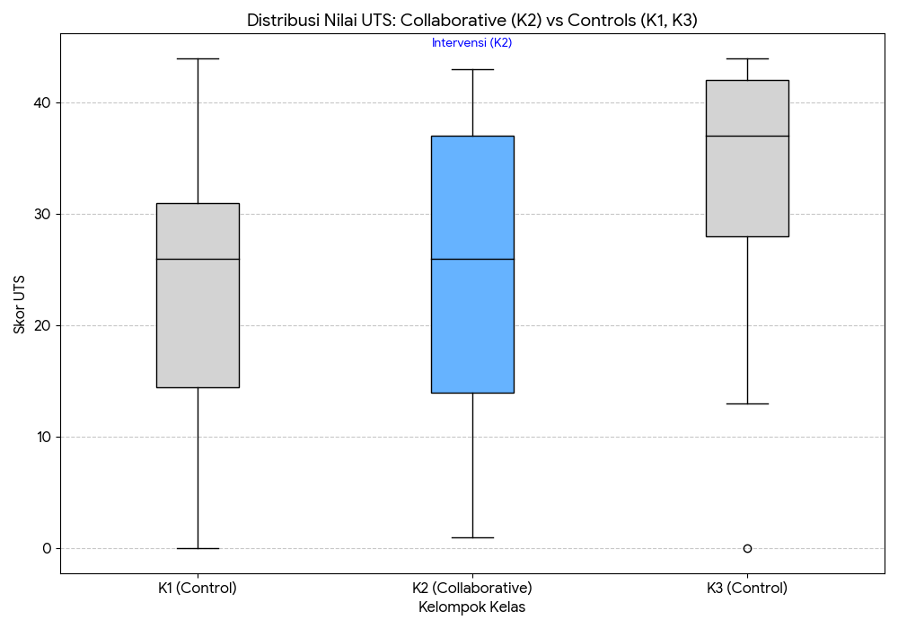

5 Bukti Empiris & Dampak Penelitian (Empirical Evidence)
Efektivitas kerangka kerja VALORIZE (CKM-SE) divalidasi melalui studi kuasi-eksperimental pada mata kuliah Probabilitas & Statistika (\(N=143\)). Penelitian ini membandingkan kelas dengan penerapan Pembelajaran Kolaboratif (K2) melawan dua kelompok kontrol dengan metode konvensional (K1 & K3).
5.1 Analisis Performa Akademik
Berdasarkan data Ujian Tengah Semester (UTS), berikut adalah perbandingan performa antara kelas intervensi dan kontrol:
| Kelompok | Perlakuan (Treatment) | Rata-rata Skor (Mean) | Standar Deviasi | Keterangan |
|---|---|---|---|---|
| K1 | Kontrol 1 | 22.14 | 12.35 | Baseline Rendah |
| K2 | Intervensi Kolaboratif | 24.93 | 12.55 | Peningkatan vs K1 |
| K3 | Kontrol 2 | 34.04 | 9.92 | Baseline Tinggi |
5.2 Temuan Statistik Utama
Analisis statistik menggunakan One-Way ANOVA dan Post-hoc Tukey memberikan wawasan mendalam mengenai posisi metode kolaboratif:
- Peningkatan Positif Terhadap Baseline (K2 vs K1):
- Kelas Intervensi (K2) mencatat rata-rata skor +2.79 poin lebih tinggi dibandingkan Kontrol 1 (K1).
- Effect Size (\(d=0.22\)) menunjukkan dampak positif dalam kategori Kecil-Sedang. Ini mengindikasikan bahwa kolaborasi mulai memberikan dampak positif pada pemahaman mahasiswa dibandingkan metode konvensional dasar.
- Tantangan Implementasi (K2 vs K3):
- Terdapat perbedaan signifikan (\(p < 0.001\)) di mana Kontrol 2 (K3) memiliki performa lebih tinggi. Hal ini menjadi temuan penting untuk evaluasi lebih lanjut, apakah faktor input mahasiswa atau variabilitas metode konvensional di K3 mempengaruhi hasil.
- Kesimpulan Awal: Metode kolaboratif VALORIZE (K2) terbukti mampu mengangkat performa di atas batas bawah kelas konvensional (K1), namun memerlukan optimalisasi lebih lanjut (seperti penguatan Personalized Learning melalui PUDAL Engine) untuk mencapai atau melampaui performa kelas unggulan (K3).
 (Gambar: Visualisasi distribusi nilai menunjukkan posisi kelas Kolaboratif (K2 - Biru) yang berada di tengah, mengungguli Kontrol K1 namun masih di bawah Kontrol K3)
5.2.1 Temuan Kualitatif: Mekanisme Keberhasilan
Analisis tematik terhadap refleksi mahasiswa mengungkap tiga mekanisme utama yang mendorong keberhasilan ini: 1. Nilai Epistemologis: Pembuatan artefak memaksa mahasiswa “mengajar” materi kepada orang lain, yang memperdalam pemahaman mereka sendiri. 2. Nilai Sosial: Adanya Peer Review membuat mahasiswa merasa karyanya “hidup” dan berguna, bukan sekadar tugas untuk dosen. 3. Nilai Identitas: Mahasiswa mulai melabeli diri mereka sebagai “kontributor” atau “insinyur muda”, bukan hanya “peserta kuliah”.
5.3 Dampak Terhadap Kompetensi Profesional (Non-Kognitif)
Meskipun hasil akademik bervariasi, dampak VALORIZE sangat konsisten dan kuat pada aspek pembentukan karakter profesional:
| Dimensi Pengukuran | Effect Size (\(d\)) | Kategori Dampak | Deskripsi |
|---|---|---|---|
| Motivasi Intrinsik | 0.97 | Besar (Large) | Otonomi dalam Knowledge Marketplace terbukti memacu semangat belajar. Mahasiswa tidak lagi belajar karena nilai, tetapi karena dorongan dari dalam diri untuk berkarya. |
| Identitas Profesional | 0.84 | Besar (Large) | Mahasiswa merasa lebih dekat dengan peran engineer profesional. Mahasiswa mulai melihat diri mereka sebagai “pencipta pengetahuan” dan “pakar junior,” bukan lagi konsumen pasif. |
| Transfer Pembelajaran | 0.95 | Besar (Large) | Kemampuan adaptasi pada masalah baru meningkat signifikan. Mahasiswa mampu menerapkan pola pikir strategis untuk memecahkan masalah baru yang belum pernah diajarkan di kelas. |
5.4 Status & Peta Jalan Riset
Penelitian ini dilaksanakan dalam tiga fase strategis (DSRM): * Fase 1 (Desain & Validasi): Selesai. Menghasilkan arsitektur CKM-SE dan validasi ahli. * Fase 2 (Prototipe & Pilot): Selesai. Pengembangan PUDAL/PSKVE Engine dan uji coba terbatas (\(N=143\)). * Fase 3 (Implementasi Skala Penuh): Sedang Berlangsung. Perluasan ke 3 mata kuliah dengan target partisipan \(N>200\).
Kesimpulan: VALORIZE memberikan dampak holistik. Sementara peningkatan akademik sedang berjalan bertahap, transformasi pada motivasi dan identitas profesional mahasiswa sudah menunjukkan hasil yang sangat masif dan signifikan.